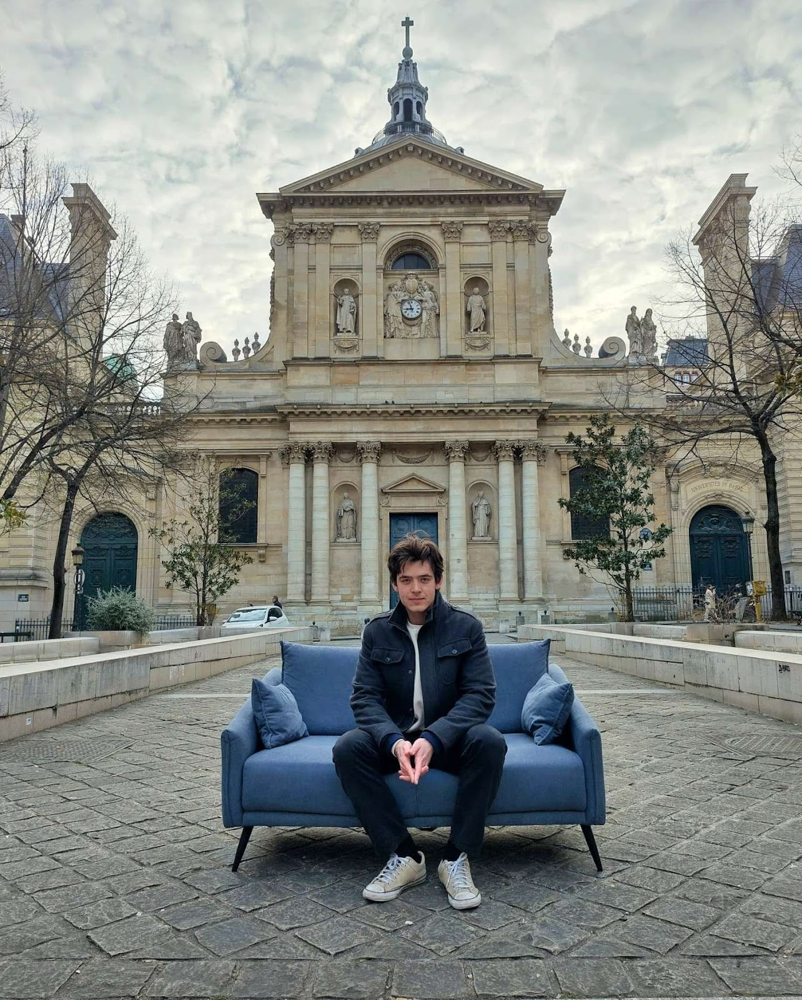

Salut, moi c'est Julian. Je suis actuellement chercheur invité à Johns Hopkins et étudiant en sciences cognitives à l'ENS. Je suis titulaire d'un master en philosophie de Sorbonne Université.
Mes recherches portent sur l'explication, le langage, et le sens « supralinguistique » (p. ex. le sens dans la mode ou dans les actions non linguistiques). Je m'intéresse aussi à l'IA et aux neurosciences computationnelles. Vous pouvez en savoir plus sur mes recherches en assistant à l'une de mes prochaines communications :
Ou cliquez ici pour en savoir plus sur mes axes de recherche et voir la liste complète de mes communications.
Cliquez ici pour découvrir certains de mes autres centres d'intérêt.
Voici mon CV (PDF).
N'hésitez pas à me contacter à jleesur1@jh.edu si vous voulez discuter de philosophie et de sciences cognitives (ou de n'importe quoi d'autre).